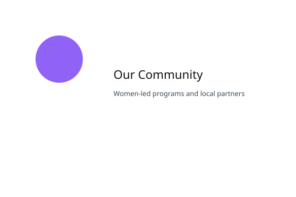

Dignity & Respect
Every woman and girl deserves to be treated with dignity. We approach every interaction with respect and compassion.
Queens of Change Foundation is a women-led NGO dedicated to transforming the lives of underprivileged women and girls across India. We believe that menstrual health should never be a barrier to dignity, education, or opportunity.

Founded on the principle that every woman deserves respect and support, we work directly in communities to provide sanitary pads, health education, and empowerment opportunities. We are 100% women-led and driven by the lived experiences of the communities we serve.
Our approach is holistic—we don't just distribute products, we transform beliefs, break stigma, and create pathways to independence for women and girls.
Every woman and girl deserves to be treated with dignity. We approach every interaction with respect and compassion.
We work with communities, not for them. Our solutions are shaped by the voices and needs of those we serve.
Our goal is to create lasting change—breaking stigma, building confidence, and enabling economic independence.
We provide free, high-quality sanitary pads to underprivileged girls and women, ensuring they never miss school or work due to lack of resources.
Through interactive, culturally-sensitive sessions, we educate women and girls about menstrual health, breaking stigma and empowering them with knowledge.
We don't stop at sanitary pads and education. We provide vocational training, skill development programs, and mentorship to help women achieve economic independence.
Free Sanitary Pads Distributed
Communities Reached Across India
Lives Directly Impacted
Women-Led Organization
Every contribution helps us reach more communities, support more women, and create lasting change. Be part of the solution.